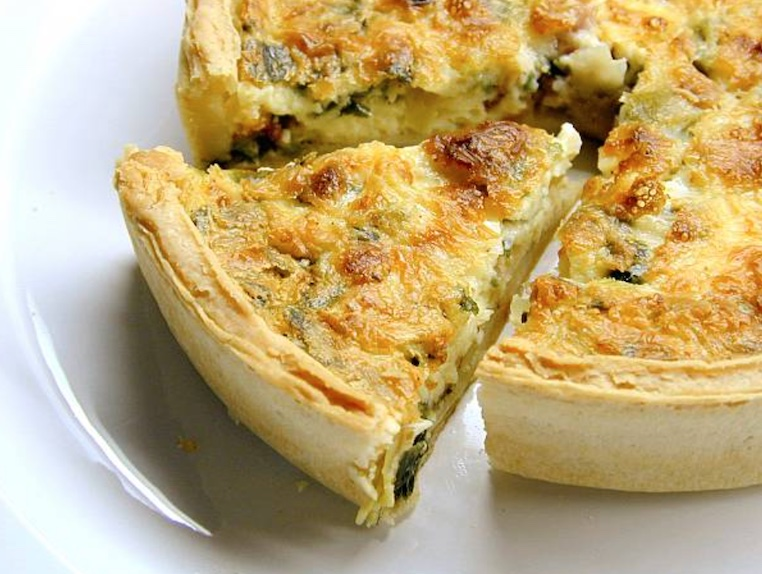

Breakfast (Only offered 7:00am-11:00am):
- Bacon, Egg, & Cheese Sandwich - Choice of bagel, croissant or english muffin with bacon, egg, and cheese. Served warm.
- Sausage, Egg, & Cheese Sandwhich - Choice of bagel, croissant or english muffin with sausage, egg, and cheese. Served warm.
- Bacon, Egg & Cheese Quiche - Bacon, eggs, & cheese baked in a simple pastry crust.
- Spinach & Artichoke Quich - Spinach, artichokes, & eggs baked in a simple pastry crust.
- Breakfast Wrap - Choice of bacon or sausage with egg, cheese, & salsa wrapped in a tortilla. Served warm.
Lunch (Only offer 11:00am-3:00pm):
- Classic Grilled Cheese - Sourdough bread with Cheddar cheese.
- BLT - Sourdough bread with bacon, lettuce & tomato.
- Ham & Swiss - Sourdough bread with ham and Swiss cheese. Lettuce & tomato added upon request.
- Cobb Salad - Romaine lettuce, tomato, bacon, hard-boiled eggs, blue cheese & vinaigrette dressing.
- Caesar Salad - Romaine lettuce with croutons Parmesan cheese & Caesar dressing.

Bakery (Offered all day):
- Plain Bagel - Classic soft bagel. Served with cream cheese or butter.
- Everything Bagel - Classic soft bagel with poppy seeds, sesame seeds, dried garlic, dried onion, and salt. Served with cream cheese or butter.
- Croissant - Butter croissant with many flaky layers. Served warm.
- Chocolate Croissant - Croissant with many flaky layers filled with chocolate. Served warm.
- Cheese Danish - Butter croissant dough with a cheesey center. Served warm.
- Seasonal: Pumpkin Loaf - Classic sweet bread with pumpkin flavors.